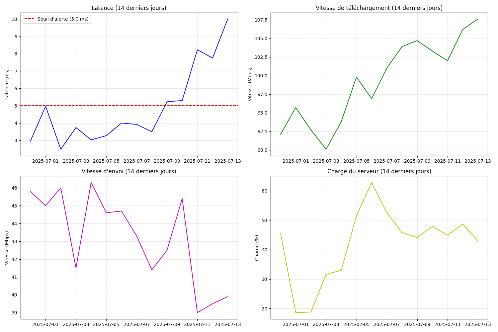

Analyse complète des performances réseau du système de trading

| Métrique | Valeur | Statut |
|---|---|---|
| Minimum | 2.02 ms | Excellent |
| Maximum | 10.00 ms | Critique |
| Moyenne | 4.04 ms | Acceptable |
| Écart type | 1.77 ms | Variable |
| Métrique | Montant (Mbps) | Descendant (Mbps) |
|---|---|---|
| Minimum | 39.0 | 88.9 |
| Maximum | 49.9 | 107.6 |
| Moyenne | 44.7 | 97.7 |
| Écart type | 2.7 | 4.7 |
Continuer à surveiller quotidiennement la latence pour garantir qu'elle reste sous le seuil critique de 5.0 ms.
Planifier un audit du réseau si la latence dépasse 5.0 ms plus de 2 jours consécutifs.
Envisager une mise à niveau de la bande passante montante si le débit moyen descend sous 40 Mbps pendant plus d'une semaine.
Tester régulièrement le plan de continuité d'activité avec la migration vers le site de secours pour valider les temps de bascule.